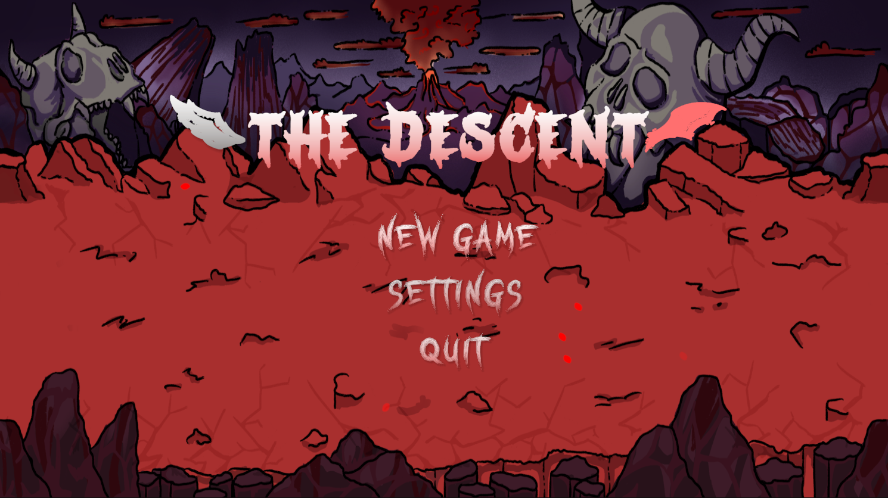
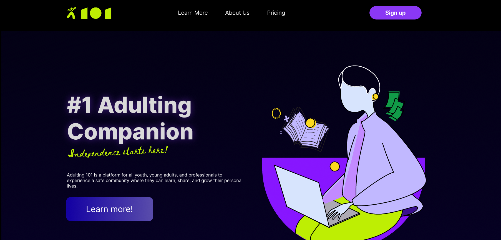
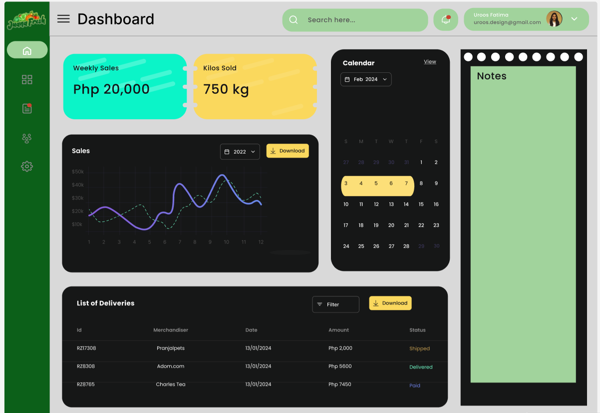

3rd Year Computer Science Student
View My WorkHi! I’m Roniella, a Computer Science student with an interest in technology, programming, and creative design. I enjoy learning new skills, solving problems, and working on projects that help me grow both technically and personally. I’m always eager to explore new ideas and improve through every experience.

The Descent is a fast-paced typing shooter inspired by ZType. Players take on the role of a powerful angel sent by God to descend through the layers of Hell and defeat the demons that threaten creation. By typing words accurately and quickly, players unleash divine attacks to clear five increasingly difficult waves, culminating in a final battle against Lucifer, the fallen angel and ruler of Hell. The game combines typing-based combat with a narrative-driven journey.

Adulting 101 is a webapp that helps young adults become more independent by teaching practical life skills such as budgeting, paying bills, cooking, home management, and navigating government requirements. It combines localized guides, productivity tools, and a supportive community into one platform, making adulthood less overwhelming and more manageable.

Juana Fresh is a local agricultural platform that supports farmers by purchasing their crops at fair prices determined by the farmers themselves. The platform distributes fresh produce to clients, including retail stores and malls, and helps farmers find buyers during periods of overproduction, ensuring that their harvests reach the market and generate sustainable income.
Feel free to get in touch. Email: 202480103@psu.palawan.edu.ph